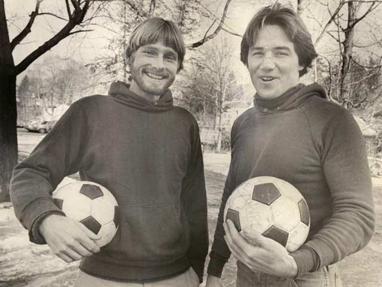
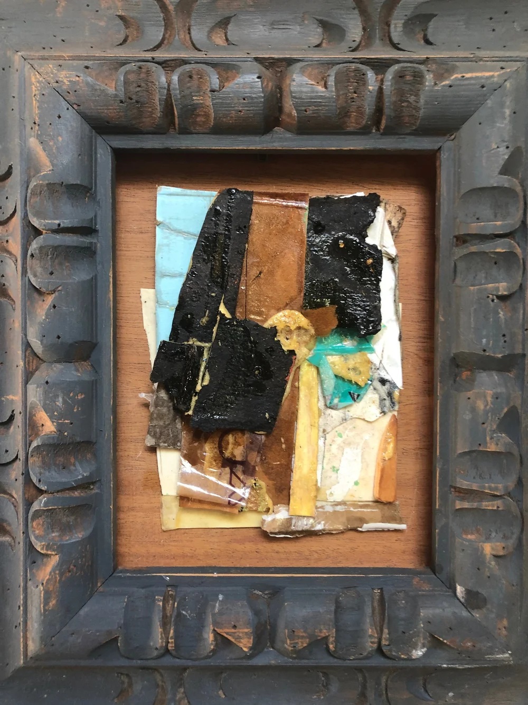
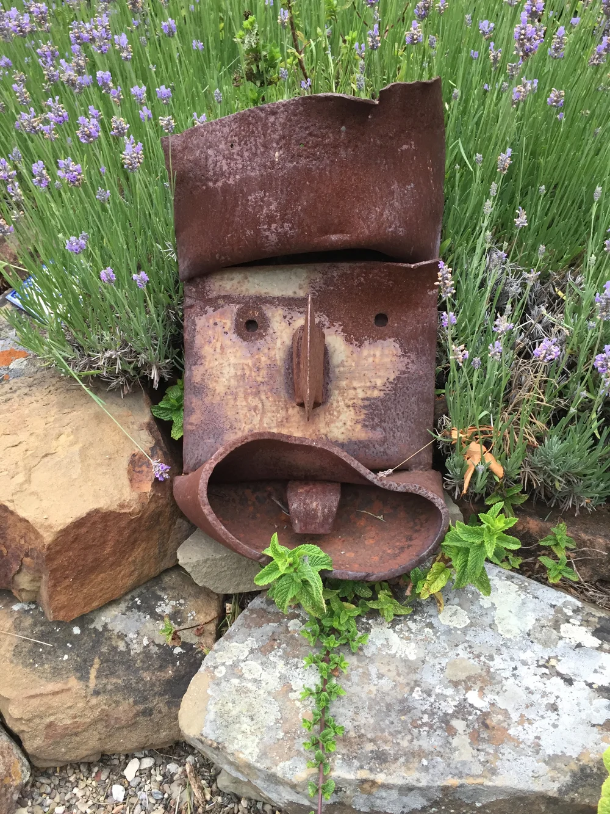
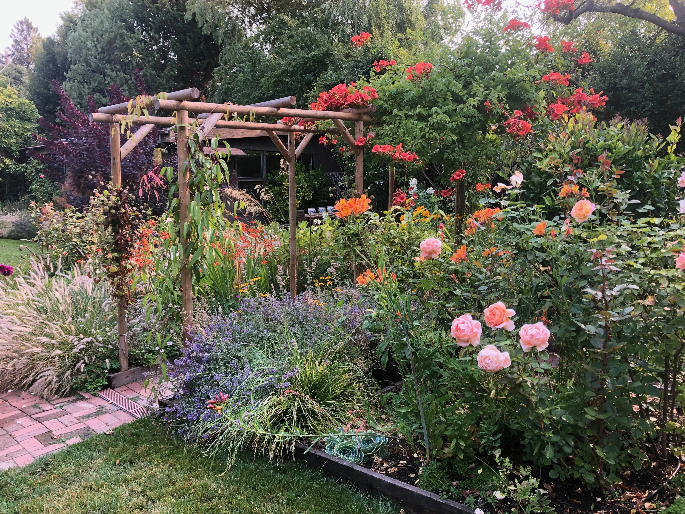
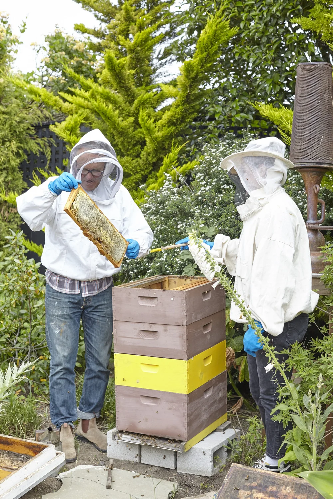

Meet Coach Shane
A record-setting keeper.A championship coach.
.jpg)
Meet Coach Shane
The mission
Shane Kennedy Soccer exists to develop complete players: technically sharp, tactically smart, and confident enough to take risks. Every player gets the individual attention a team setting can't give, and no one is ever forced into a position: the game should be something they love.
The measure of success is development, not the scoreline. A player who competes, works hard, and gets a little better every session is doing it right, win or lose.
He builds an honest, inclusive team where every player can participate and take ownership of their own growth. "I really want the kids to take ownership of what they do, and feel that they can participate and change things themselves if they want to."

Shane Kennedy was the American goalkeeper who led Babson College to the 1975 NCAA Division III title and posted 10 consecutive shutouts, then was selected by the New York Cosmos in the 2nd round of the NASL Draft and later played for the ASL's Connecticut Yankees (1977).
Shane Kennedy earned the starting goalkeeper job for the men's soccer team in each of his four years at Babson. As a junior in 1975, he set a Babson record by posting 10 consecutive shutouts, a mark he still holds. As a result of his fantastic play that season, the Beavers posted a remarkable record of 17-0-1 and won their first-ever NCAA national championship. Kennedy then captained the Beavers to 11 more wins in 1976, improving his career record to 44-7-3. He remains second among Babson's all-time leaders in shutouts with 41.
The track record
Playing career
Coaching credentials
Honors
What Coach Shane builds
Confidence is a trainable skill, not something a player is born with. Fear of failure holds players back, so Coach Shane builds the habits and the composure to play free, take risks, and step on the field expecting to compete.
Every player comes in at a different point, with a different body, personality, and set of strengths. Coach Shane coaches the player in front of him and gives their game the room and the time it needs to grow.
The best players lift the team around them. Coach Shane develops the composure to organize teammates, communicate under pressure, and lead by example, on the field and off it.
Off the field
He works with what is in front of him, doesn't force it, and lets it take the time it takes.
Shane studied at the Art Students League in NY and Silvermine before co-founding Furniture Club (a core contributor to the 1980s Art Furniture movement). Moving West in 1988, he began creating his signature Combines: found-object collages, portraits, and sculptures. His work has been exhibited nationwide and featured in The New York Times, The San Francisco Chronicle, Abitare, and Industrial Design.


Through Shane Kennedy Garden Design, he transforms landscapes across Marin from Larkspur and Sausalito to edible gardens in Ross. His signature style blends drifts of native grasses, fruit trees, and roses in low-upkeep "organized chaos." He is also an active local beekeeper.


Tell Coach Shane where your player is now and where they want to go. He'll build the session around them.
Book a Session